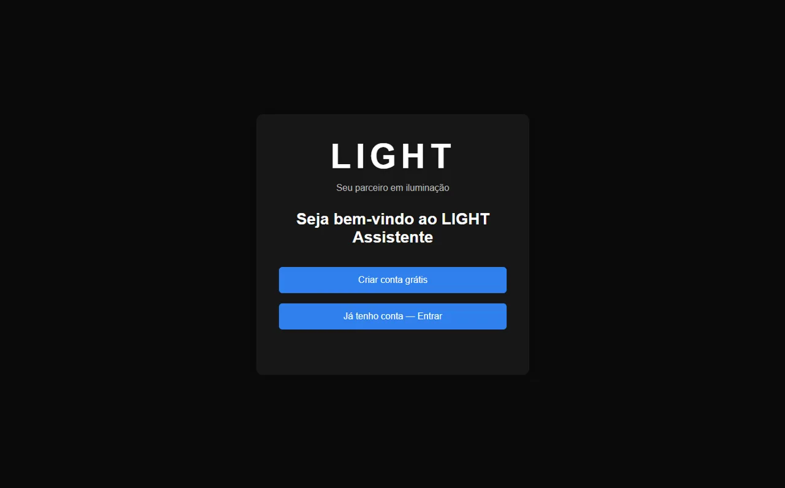
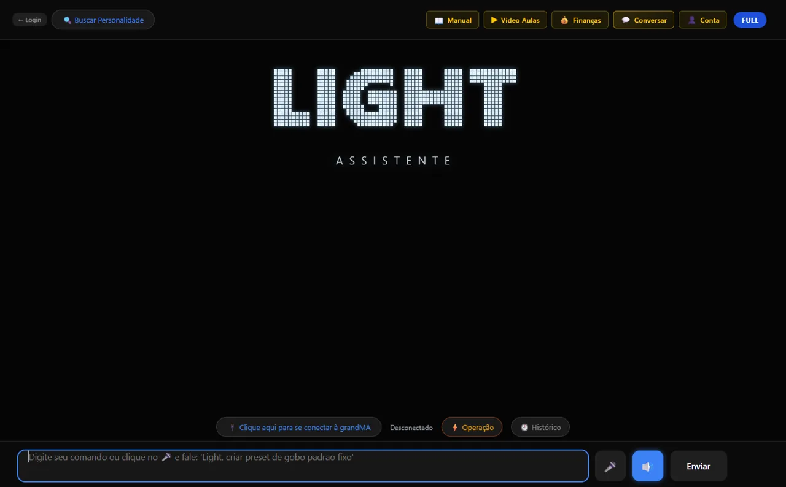
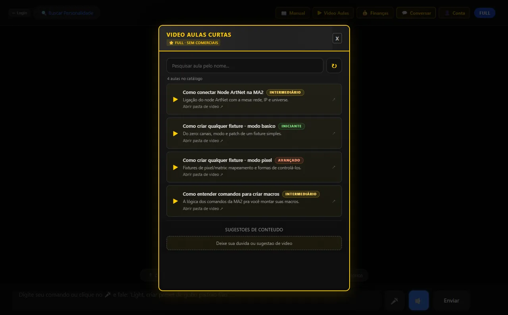
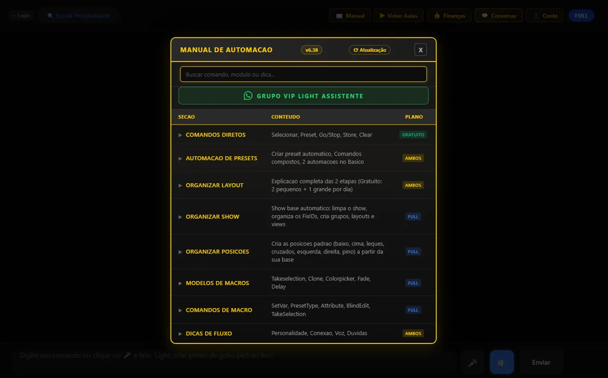
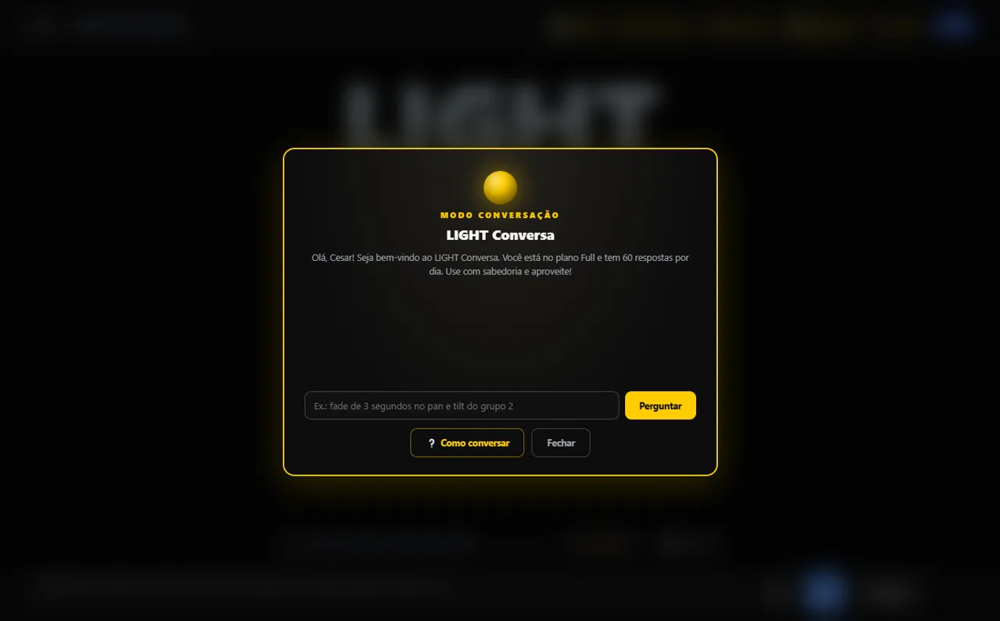
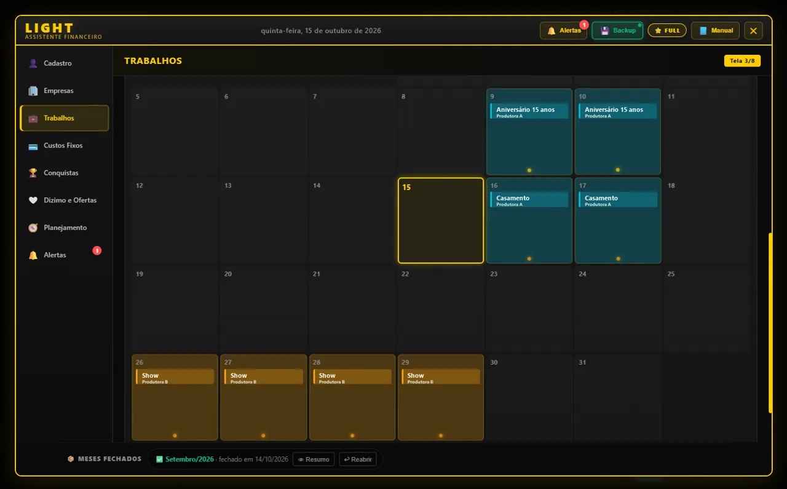

Menos tempo programando.
Mais tempo criando luz.
O LIGHT faz por você o trabalho repetitivo da grandMA2 — presets, cues, fades, delays — a partir de frases simples em português. E ainda acha a fixture certa pela sequência de canais DMX.
Plano gratuito de verdade · sem cartão para começar
Você não virou iluminador para digitar comando.
Montar presets um por um, gravar cue por cue, caçar o arquivo da fixture na internet na véspera do evento. O LIGHT tira esse peso das suas costas.
"dimmer de 0 até 100 de 10 em 10" — uma frase, o LIGHT grava todos no pool.
fixtures na biblioteca para buscar pela sequência de canais ou pelo nome.
Fale como você fala no palco. O LIGHT traduz para a sintaxe da mesa.
Tudo o que um operador precisa,
num assistente só.
Automação da grandMA2
Presets de cor, dimmer, beam, posição, focus e gobo. Cues com fade e delay. Você descreve, o LIGHT manda para a mesa pela rede (Telnet) — sem decorar sintaxe.
Ache a fixture pelos canais DMX
Sabe a ordem dos canais mas não o modelo? Digite a sequência e o LIGHT encontra. Baixe o arquivo e leve no pendrive para a mesa.
Modo Conversa
Dúvida de MA2 no meio da montagem? Pergunte em português. Respostas baseadas em procedimentos testados na mesa — sem inventar comando.
Financeiro do iluminador
Cachês, gastos e agenda num lugar só. Anote pelo WhatsApp: "Light, gastei 20 no uber".
Videoaulas curtas
Aulas diretas ao ponto, das dúvidas reais de quem opera. Aprenda no seu ritmo.
O LIGHT monta.
Você comanda o show.
Show não tem "desfazer" na frente do público. Por isso o LIGHT prepara o show base com processos fechados e testados — e a mesa, no evento, é só sua.
Cada automação segue regras fixas e testadas na grandMA2 onPC.
Apagar show, resetar ou sobrescrever cue existente: o LIGHT não faz sem você.
Você sabe exatamente o que foi enviado para a mesa.
Em 3 passos você está operando.
Baixe e instale
Instalador para Windows. Leva poucos minutos.
Crie sua conta grátis
E-mail e senha. Já começa no plano Gratuito, sem cartão.
Conecte na grandMA2
onPC ou console na mesma rede. Fale o que quer, o LIGHT faz.
Mexa no LIGHT antes de instalar.
Escolha uma situação real e veja o LIGHT trabalhando — com as mesmas respostas que o app dá.






Comece grátis. Libere tudo quando quiser.
O Gratuito resolve o dia a dia. O Full tira todos os limites.
Gratuito
Para conhecer e usar no dia a dia.
- Busca de fixtures por canais DMX ilimitada
- Comando por voz (transcrição do navegador)
- 2 automações de preset por dia
- 2 modelos de macro por dia
- Organizar Layout: 2 pequenos + 1 grande por dia
- 1 download de fixture por dia
- 5 respostas da IA por dia no Modo Conversa
- Financeiro com 1 empresa · 3 anotações/dia no WhatsApp
- 2 videoaulas por dia, com comercial
- 1 dispositivo
Full
Para quem vive de luz.
- Automações ilimitadas, com lote, fade e delay
- Do zero ao show pronto: o seu show pessoal nos aparelhos do evento — Organizar Show, PSR, Clone, Cores, Efeitos e Posições (teste real do criador: ~1 h com o show do evento já montado)
- Color Picker + Delay + Fade montado no seu show
- Macros e Organizar Layout ilimitados
- Downloads de fixtures ilimitados + pacote para pendrive
- Comando por voz transcrito pela IA da nuvem
- Modo Conversa com IA na nuvem (60 respostas/dia)
- Financeiro completo + WhatsApp sem limite
- Todas as videoaulas, sem comercial
- Até 3 dispositivos (casa, notebook, empresa)
- Suporte prioritário
A assinatura é feita dentro do LIGHT, com pagamento seguro pelo Asaas. Cancele quando quiser, pelo próprio app.
"Faz uns 20 anos que eu ilumino evento — corporativo, social, show. O LIGHT nasceu do que eu queria ter na mesa: menos tempo digitando, mais tempo criando."César Reis · iluminador e criador do LIGHT
Perguntas frequentes
Funciona com qual mesa?
grandMA2 — onPC e console, conectados na mesma rede do computador. O LIGHT é validado na grandMA2 onPC 3.9.60.45 e avisa se a sua versão for diferente. A grandMA3 está nos planos para o futuro.
Roda em Mac?
Por enquanto, só Windows.
Precisa de internet?
Para criar a conta, entrar e usar a IA na nuvem, sim. A conexão com a mesa é pela rede local.
O LIGHT pode estragar meu show file?
Ações perigosas — apagar show, resetar, sobrescrever cue existente — ficam travadas e nunca são feitas sem você. Mesmo assim, salve seu show antes de começar, como em qualquer ferramenta.
Como assino e como cancelo o Full?
Tudo dentro do LIGHT, na sua conta. Pagamento pelo Asaas. Para cancelar, é no próprio app, quando quiser.
O plano Gratuito tem prazo?
Não. É gratuito para sempre, com limites diários que renovam toda meia-noite.
Bora para a mesa?
Baixe o LIGHT, crie sua conta grátis e sinta a diferença no próximo show-prep.
⬇ Baixar o LIGHT para WindowsWindows 10 ou 11 · ZIP de 300 MB · descompacte e abra o LIGHT Assistente.exe